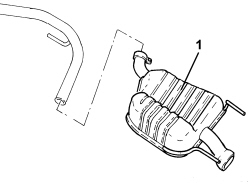

1076B20 REAR EXHAUST SILENCER - R + R
- Path
- Procedures > 10 ENGINE > 1076 EXHAUST PIPES AND SILENCERS > 1076B EXHAUST PIPES AND SILENCERS > 1076B20 REAR EXHAUST SILENCER - R + R
- Kind
- repair procedure (removal / refitting; the operation number is the code)
- Applies to
- engines: 2.4 JTD 20v; all production periods
- Interactive page
- https://sloeber94.github.io/elrnDB-aBrrSpdr/en/#/946003016
Applies to: engines: 2.4 JTD 20v; all production periods
 Removing
Removing
 Refitting
Refitting- Position the vehicle on a lift.
Op. 7055B54 UNDER ENGINE PROTECTION/GUARD - R.R.
Op. 1076B12 EXHAUST PIPE ASSEMBLY R R
1. Working at the bench, loosen collar (1a) and remove the rear exhaust silencer (1b).

Applies to: engines: 2.4 JTD 20v; all production periods
Refitting
Removing- Place the rear exhaust silencer in its housing and secure with the collars.
Op. 1076B12 EXHAUST PIPE ASSEMBLY R R
Op. 7055B54 UNDER ENGINE PROTECTION/GUARD - R.R.
- Remove the vehicle from the lift.